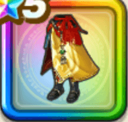

八竜神エイトのコート下
攻略班 9.5点 / 幻惑耐性+10%暗黒神ラプソーンへの耐性+10%怯え耐性+10%幻惑耐性+5%怯え耐性+5%スキルの斬撃ダメージ+8%全属性ダメージ+4%【晴れ】会心率+2%
くわしい特徴
【レベル別習得スキル】 Lv1幻惑耐性+10% Lv3暗黒神ラプソーンへの耐性+10% Lv5怯え耐性+10% Lv8スキルの斬撃ダメージ+8% Lv10全属性ダメージ+4% Lv12【晴れ】会心率+2% Lv15ターン開始時MPを2回復する Lv18幻惑耐性+5% Lv20さいだいHP+4 Lv23怯え耐性+5% Lv25守備力+5 【限界突破スキル】 1凸攻撃力+12 2凸すばやさ+12 3凸守備力+12 4凸さいだいHP+12